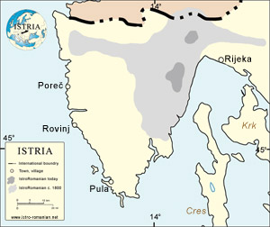

 www.istro-romanian.net este o nouă pagină de internet unde cei interesați de comunitatea istro-română pot afla informații în legătură cu provenieța, istoria acestora, dar și date recente legate de viața socială și culturală a acestei comunități în Croația.
Totodată, portalul oferă și o listă de lucrări dedicate acestui subiect, în care specialiști în domeniu tratează problema mai pe larg și mai aprofundat decât o pagină de internet.
Pe pantele muntilor Cicarija, între Trieste și Rijeka sunt sate ai căror locuitori vorbesc o limba mai apropiată de română decât aromâna, dar care are totuși suficiente trăsături particulare pentru a fi condiderată un dialect de sine stătător. Cunoscuți de locuitorii zonei ca ciribiri, iar de către filologi drept Vlahi Istrieni, locuitorii acestor sate sunt atât niște supraviețuitori remarcabili din punct de vedere lingvistic, cât și un puzzle istoric. Croația este țara cu cea mai redusă comunitate vorbitoare de limba română din toate țările balcanice. De fapt, ei sunt numiți istro-români, nume care provine de la zona în care trăiesc, Peninsula Istria. Croația a fost, în perioada 1102-1918, parte a Imperiului Austro-Ungar și a fost în mare parte influențată de cultura și tradițiile vestice. Croații au fost foarte de timpuriu convertiți la catolicism și au adoptat alfabetul latin, spre deosebire de sârbi care au rămas ortodocși și folosesc alfabetul chirilic. Istro-românii din această regiune au fost și ei în mod semnificativ influențați de istoria croată.
Istro-românii din Croația locuiesc o zona foarte mică în regiunea nord-estică a Peninsulei Istria. Pentru că nu exista nici un fel de continuitate spațială cu aromânii la sud, sau cu românii la est, trebuiau să se stabilească aici. Mulți istorici cred că istro-românii au sosit în aceste zone undeva în secolul XV, odată cu invazia otomană. Ceea ce rămâne încă neclar este dacă aceștia au venit dinspre România sau din Iugoslavia, ceea ce ar însemna că sunt ultimele rămășite ale vlahilor, atât de des menționați în cronicile sârbești ca locuitori ai zonei.
Micuța comunitate ce numară mai puțin de 1.500 de persoane este listată în Cartea Roșie UNESCO pentru limbi pe cale de dispariție. Cu toate acestea și în mod surprinzător, anumiți cercetători care au mers în această zonă pe la 1960 au mai găsit copii care vorbeau încă limba, oferind astfel speranța în supraviețuirea sa, deși mulți experți sunt de acord că aceasta nu va dura mult. Nu există nici un fel de educație în dialectul istro-român, în principiu pentru că nu sunt suficienți copii care să meargă la astfel de școli. De asemenea, nu există nici emisiuni de radio sau de televiziune care să folosească acest dialect al limbii române. Mai mult decât atât, istro-românii nu sunt recunoscuți ca minoritate națională de către Constituția Croată. Lipsa acestei recunoașteri oficiale a rezultat, evident, într-o lipsă de inițiative politice privitoare la această comunitate. Pentru că nu sunt oricum o comunitate numeroasă este și greu de crezut că istro-românii din Croația ar avea de făcut revendicari de natură politică, însă ceea ce și-ar dori cu adevărat este să vadă că se fac eforturi pentru păstrarea limbii și culturii lor naționale, scrie pagina de web a comunității istro-române.
July 7, 2005
© 2005 Romanian Global News